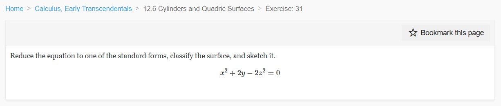
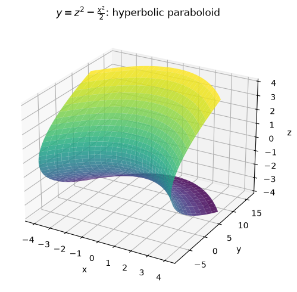
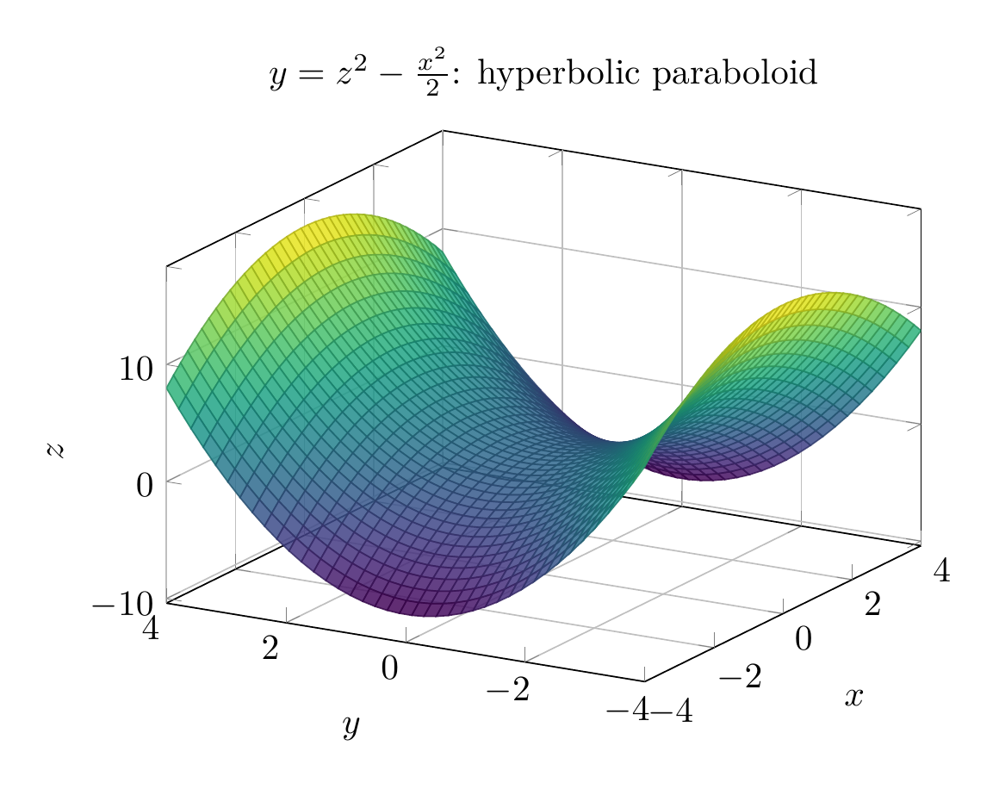

Path: mcma-Nex-N2-Pro/calculus-12.6.31/chat_20260825_021017_783972_utc_0800
Problem
Please solve the math problem in the image.

End of problem
Answer
We want to reduce
$$
x^2+2y-2z^2=0
$$
to a standard quadric-surface form.
Solve for $y$:
$$
2y=2z^2-x^2
$$
so
$$
\boxed{y=z^2-\frac{x^2}{2}}.
$$
This is a standard form of a **hyperbolic paraboloid**, because it has one squared variable with a positive coefficient and one squared variable with a negative coefficient, and the remaining variable is linear.
A common standard form is
$$
y=\frac{z^2}{b^2}-\frac{x^2}{a^2}.
$$
Here,
$$
b^2=1,\qquad a^2=2.
$$
So the surface is a hyperbolic paraboloid opening upward in the $z$-direction and downward in the $x$-direction.
Useful traces:
- In the plane $z=0$:
$$
y=-\frac{x^2}{2},
$$
a downward-opening parabola.
- In the plane $x=0$:
$$
y=z^2,
$$
an upward-opening parabola.
- In the plane $y=0$:
$$
x^2=2z^2,
$$
two intersecting lines.
Therefore, the equation represents a **hyperbolic paraboloid**.
$$
\boxed{y=z^2-\frac{x^2}{2}\text{, a hyperbolic paraboloid}}
$$
The sketch is shown below.
---


\documentclass[border=10pt]{standalone}
\usepackage{pgfplots}
\pgfplotsset{compat=1.18}
\begin{document}
\begin{tikzpicture}
\begin{axis}[
width=9cm, height=7cm,
xlabel={$x$}, ylabel={$y$}, zlabel={$z$},
title={$y=z^2-\frac{x^2}{2}$: hyperbolic paraboloid},
view={-60}{25},
grid=major,
colormap/viridis,
samples=40,
domain=-4:4,
y domain=-4:4
]
\addplot3[surf, opacity=0.85] {y^2 - x^2/2};
\end{axis}
\end{tikzpicture}
\end{document}

End of answer